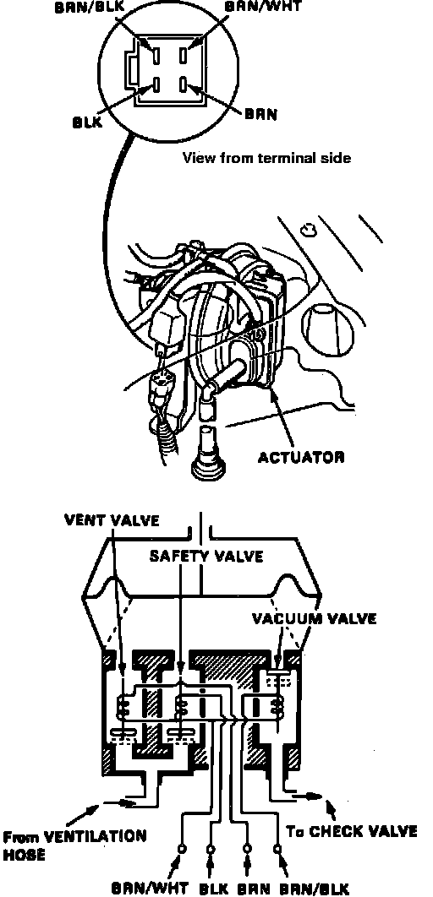

Cruise Control Vacuum Solenoid: Testing and Inspection
Fig. 31 Actuator Solenoid:

1. Disconnect 4-P connector from actuator.
2. Measure resistance between terminals as shown in Fig. 31. Resistance readings will vary slightly with temperature. Specified ranges are at 70°F.
a. Terminals brown/white and brown/black: reading of 30-50 ohms.
b. Terminals brown/white and brown: reading of 40-60 ohms.
c. Terminals brown/white and black: reading of 40-60 ohms.